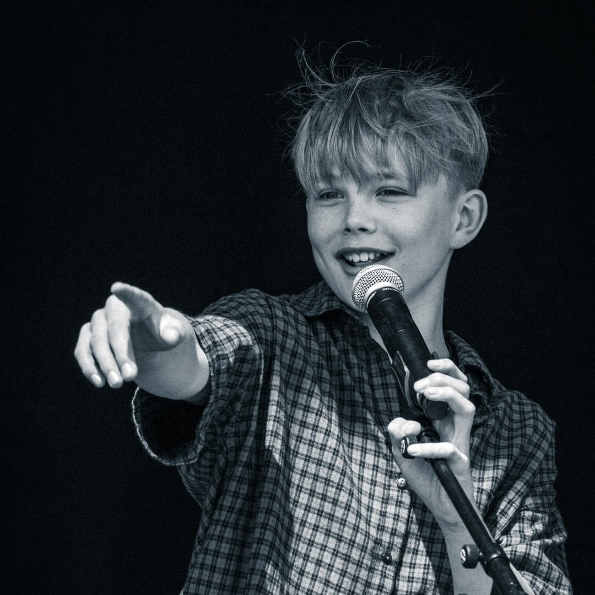
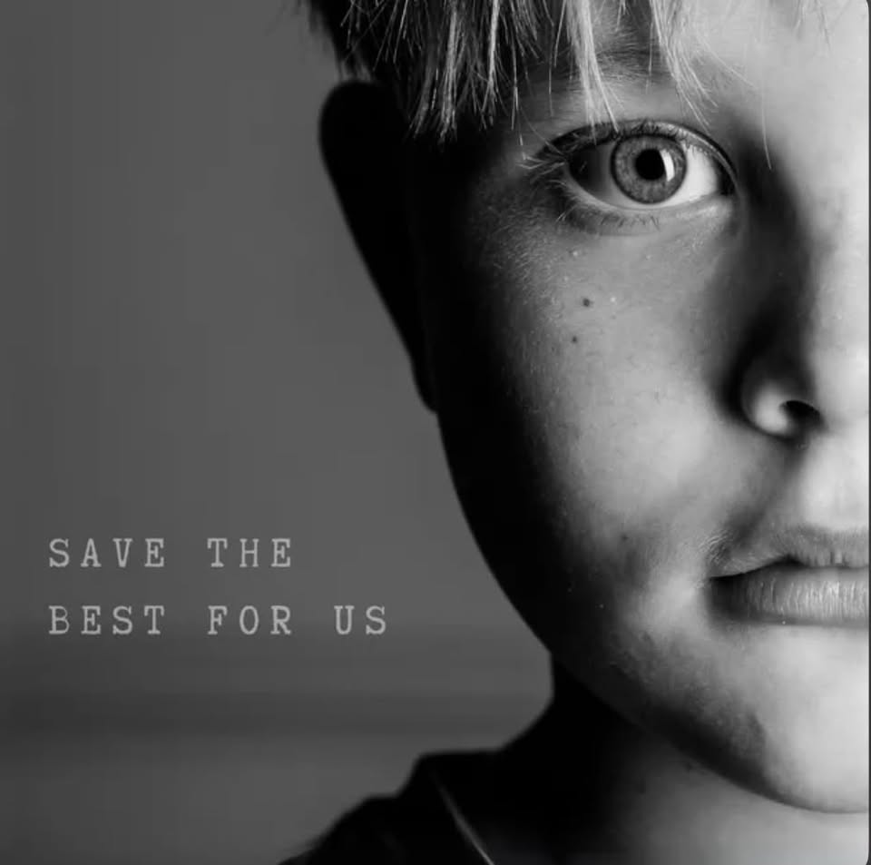
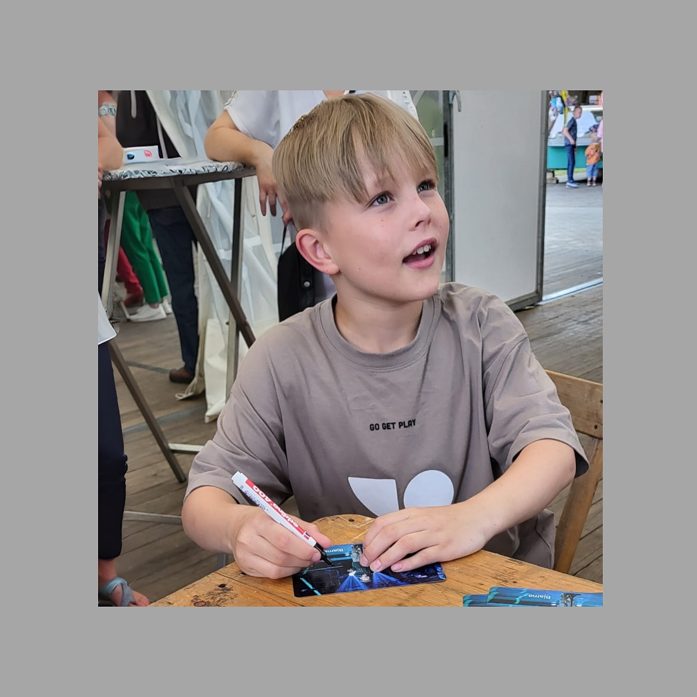
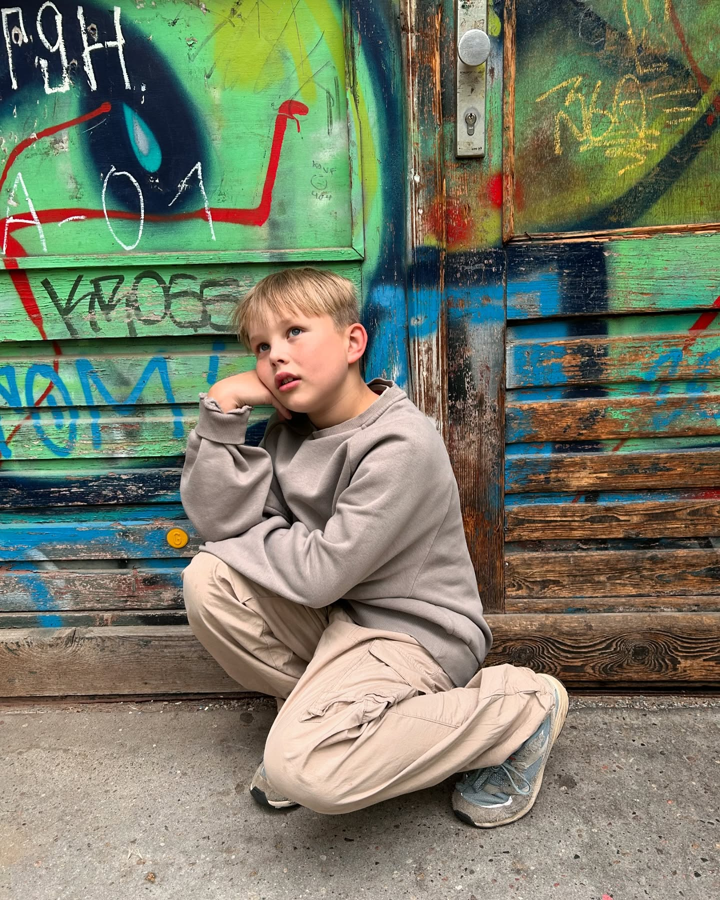
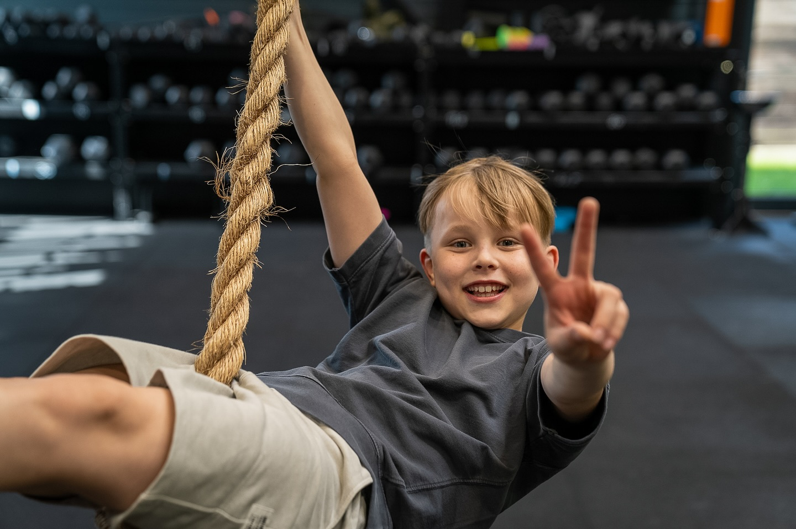
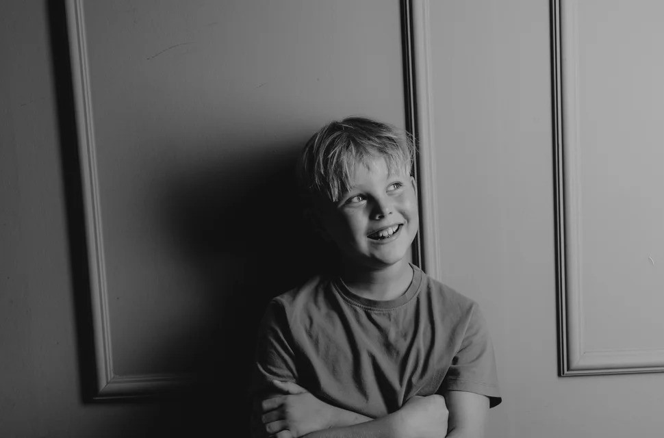
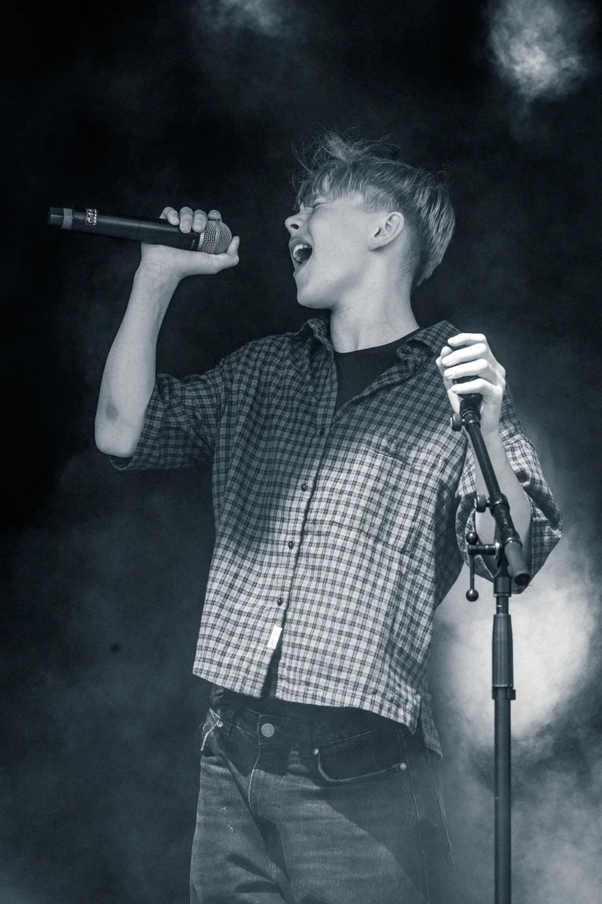

Bjarne
Singer
Music is my passion, and the stage is my home. I`ve made some unforgettable memories through my performances on The Voice Kids 2024, the Junior Eurovision Song Contest 2024, and "Ein Herz Für Kinder". My projects to date also include my first original song and my first EP.
Performances
Songs/EPs
Career History
Photo: Sat.1 / Claudius Pflug
Bjarne made his first television appearance as a singer in 2024 when he competed on the 12th season of the German singing competition show “The Voice Kids.” Bjarne`s performance in the Blind Auditions, where he sang Lewis Capaldi`s song “Someone You Loved,” went viral on all social media platforms. On “The Voice Kids,” Bjarne made it from the blind auditions through the battles all the way to the sing-offs.
On September 27, 2024, Bjarne's first original song, “Save the Best for Us,” was released on all major streaming platforms.
Photo: junioreurovision
In November 2024, Bjarne represented Germany with his song “Save the Best for Us” at the Junior Eurovision Song Contest in Madrid.
Photos: Fredrik von Erichsen / BILD
On December 6, 2024, Bjarne was a guest at the “Ein Herz Für Kinder” charity gala. There, he performed a duet with pop singer Andrea Berg, singing the song “Der kleine Trommler.”
On November 14, 2025, Bjarne released his first EP, featuring the (cover) songs “Take Me to Church,” “Another Love,” “Set Fire to the Rain,” “River,” as well as “Bird Set Free” and “People Help the People.”
In December, Bjarne recorded the voice and sang for the role of Harrison in “The Legend of the Singing Mountain” for Tonies.
Photo: Max Saeling
Bjarne got to play the role of Samuel during the test shoot for “Dream Factory.” “Dream Factory” tells the story of 12-year-old Luca, who arrives in Schrozberg after losing her parents and sets out to save a local movie theater—a story about family, imagination, and the power of cinema.
For autograph requests:
Please send an envelope with a self-addressed, stamped return envelope and your autograph requests to the following address:
Bjarne
Postfach 13
49453 Rehden
Press Article







